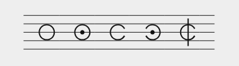
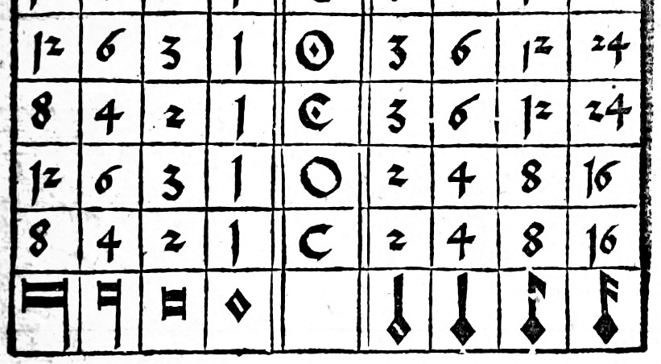

Mensural notation allows the writer to indicate a mensura which expresses how a longer note will be split up in (two or three) shorter notes on different levels of subpartition of note values. This is in contrast to earlier notations, e.g. neumes which had no regular meter, but also different from modern notation where durations follow binary splitting by default: a whole note contains two half notes, a half note contains two quarter notes, and so on.
MEI treats the actual mensura (i.e. how notes will be sung or played) as separate from the mensuration sign (i.e. what is written down, if anything). For a proper transcription, both must be encoded.
The mensuration sign is comparatively easy to encode: Either it is missing from the source altogether (or is not noted for the particular voice we are looking at) – then we just leave out the associated attributes in our <staffDef> or <scoreDef>.
If, however, there is a mensuration sign, we encode it in the <staffDef> using the mensur.sign, mensur.dot, mensur.slash, and possibly the mensur.orient attributes.
Here is are an example showing various combinations of these attributes. (Note that mensuration signs sometimes change in the course of a piece, for which you can use the <mensur> element within layers of a staff, just as we do here.)

The sign can be an O or a C, it may be dotted and slashed, and can be oriented in reverse if need be.
<staff n="1">
<layer n="1">
<space></space>
<mensur sign="O" /> <space />
<mensur sign="O" dot="true"/> <space />
<mensur sign="C"/> <space />
<mensur sign="C" dot="true" orient="reversed" /> <space />
<mensur sign="C" slash="1" /> <space />
</layer>
</staff>
We are now able to put the correct mensuration sign. Time to encode the appropriate mensura too.
As said above, the mensura expresses the division of longer notes into shorter notes on different levels. There are four levels, each describing the relationship between neighboring classes of note values. Agricola provides a handy overview of mensuration signs and note value subdivisions:

As you can see, the middle column holds the mensuration sign, and the base for the relationships of note values is the semibrevis: Its column contains 1 for all rows. Going sideways, either relationship may be binary – signifying that two shorter notes go into one longer note – or ternary, i.e. one longer note contains three shorter notes. The respective attributes for the <staffDef> are set to "2" or "3". The setup in the penultimate row with mensuration sign C is what we are used to from Common Western Music Notation: Every note value contains two smaller notes, across all classes of durations.
Starting from the left of the table, the note value relationships between neighboring columns have specific names:
modusmaiormodusminortempus"3" for an O mensuration sign (called "Tempus perfectum"), "2" for a C ("Tempus imperfectum")prolatio"3" for a dotted mensuration sign (this is "Prolation maior"), "2" for a sign with no dot ("Prolatio minor")Below the minima, all values use strict binary division, i.e. there are always two seminminimae to the minima, and so on for the fusae and semifusae as well.
The (un)dotted C or O mensuration sign only tells us about the relationships on Tempus and Prolatio level. The Modus maior and minor are more difficult to find out. In most later sources, they might not be stipulated at all; sometimes, additional numbers are put next to the mensuration sign, or the exact shape of the rest symbols can be indicative.
This tutorial cannot hope to cover all cases across the centuries. Therefore, please consult the literature for details!